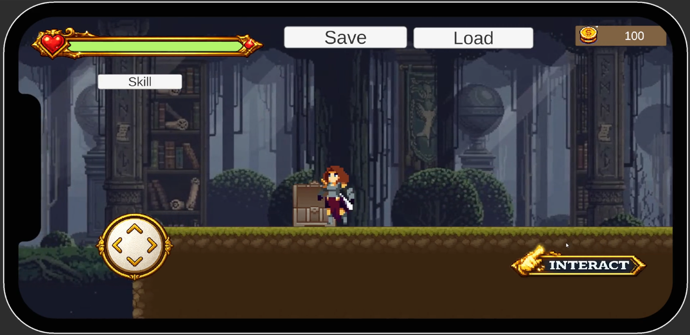

01 / GAME DEVELOPMENT
Game Development Project
พัฒนาเกม 2D แนวผจญภัย โดยฝึกการเขียนโปรแกรมควบคุมตัวละคร การโต้ตอบกับฉาก และการออกแบบ UI สำหรับผู้เล่น
รายละเอียดโปรเจกต์
- การเคลื่อนที่และระบบควบคุมตัวละคร
- การโต้ตอบกับสิ่งของและองค์ประกอบในฉาก
- หน้า UI ที่ใช้งานง่าย